.
Electronically Assisted Astronomy (EAA)
|
Astronomia Wspomagana Elektronicznie to gałąź astronomii polegająca na obserwacji na ekranie obiektów astronomicznych przy użyciu optyki i detektora elektronicznego. GENEZA Wyróżniamy formy obcowania astroamatorów z rozgwieżdżonym niebem takie jak: obserwacje wizualne, Video astronomia, astrofotografia, istnieje jednak jeszcze inna u nas mało popularna technika, a mianowicie, obserwacje kosmosu na ekranie monitora za pomocą optyki i detektorów elektronicznych (ang. Electronically Assisted Astronomy - EAA). Gdy się zastanowić, to współcześni naukowcy głównie takie prowadzą :) . Ale jak to się u mnie zaczęło? . Dawno temu, gdy byłem jeszcze młodym adeptem astronomii, gapiłem się w niebo przez teleskop i lornetkę, robiłem zdjęcia na kliszy, czasem robiłem też nocne wypady za miasto ze śp. Henrykiem Kowalewskim, który to fotografował niebo za pomocą kamer CCD. Obserwując, jak namierza galaktyki za pomocą 10-sekundowych klatek, stwierdziłem, że choć tyle czasu spędziłem, wpatrując się w te galaktyki z okiem przy okularze, to w porównaniu z tym, co On ma na zwykłym podglądzie na ekranie, to ja niewiele w sumie widziałem. Uznałem wtedy, że jest to wspaniała potencjalna forma obserwacji astronomicznych i taką w przyszłości mam zamiar uprawiać. Wiem, istnieje Video astronomia, ale to dwa różne systemy. Video astronomia polega na obserwacji najczulszym sprzętem w czasie rzeczywistym, z nie oszukujmy się, marnym zasięgiem, obserwacje cyfrowe natomiast, to zwiedzanie gromad gwiazd i galaktyk, podziwianie mgławic, za pomocą krótkich klatek, a skoro te klatki nie są poddawane akwizycji celem dalszej ich obróbki astrofotograficznej, stanowią w takim razie formę obserwacji. Fakt, iż w chwilach dobrego seeingu, celem dokumentacji, dokonuję zapisu kilku klatek, lub dokonuję zrzutu z ekranu, nie czyni mnie astrofotografem, ponieważ rzeczone zrzuty, lub chwilowe zapisy, lądują w folderze danego obiektu i leżą tam sobie do przyszłych porównań i analiz. W dzisiejszych czasach, niestety, przeglądy nieba takie jak DSS, SDSS, PanSTARRS, 2MASS psują troszkę zabawę, gdyż wystarczy uruchomić Aladin-a, aby w jedną chwilę sprawdzić, jak może w naszym teleskopie i w naszej kamerce wyglądać dany obiekt, zwłaszcza że moja skala i zasięg są bardzo zbliżone do ww., jednak nadal pozostaje sfera większej skali, w której jasne zwarte obiekty takie jak małe galaktyki, czy mgławice planetarne, na ww. przeglądach stanowią jedynie białe plamy, i tu nadal jest pole do popisu dla naszego sprzętu i metody. Zresztą, czym innym jest zobaczyć galaktykę na przeglądzie nieba z internetu, a czym innym, nawet jeśli wygląda podobnie, pod niebem na własnym sprzęcie, towarzyszą temu zupełnie inne emocje. OBSERWACJE Poniżej znajdziecie przykłady obiektów z moich cyfrowych astroobserwacji w dużej skali. Mgławica planetarna NGC 7662 - Niebieska Kula Śnieżna, Błękitna Śnieżka | Konstelacja Andromedy Newton 305/1500 + Ortho T-Japan 4mm Kasai + ATIK Titan color + IRcut#2 | 1 x 60s | 100% . 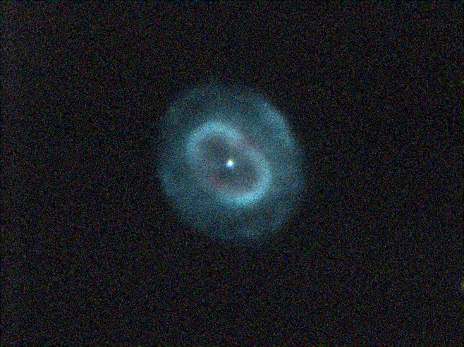 NET HST DSS HML Mgławica planetarna NGC 7026 | Konstelacja Łabędzia Newton 320/1500 + Barlow Tele Vue 3x (2,4x) + ZWO ASI 290MM-C + Baader UHC-S | 1 x 20s | 100% . 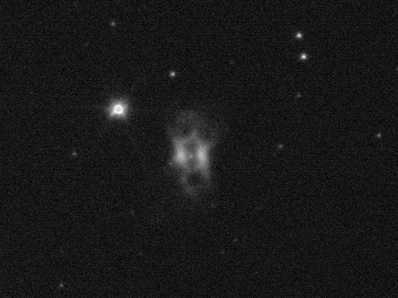 NET HST DSS HML Mgławica refleksyjna IC 349 - Mgławica Merope Barnarda | Konstelacja Byka - Plejady Newton 320/1500 + Barlow 3x + ZWO ASI 290MM-C | 1 x 20s | 100% . 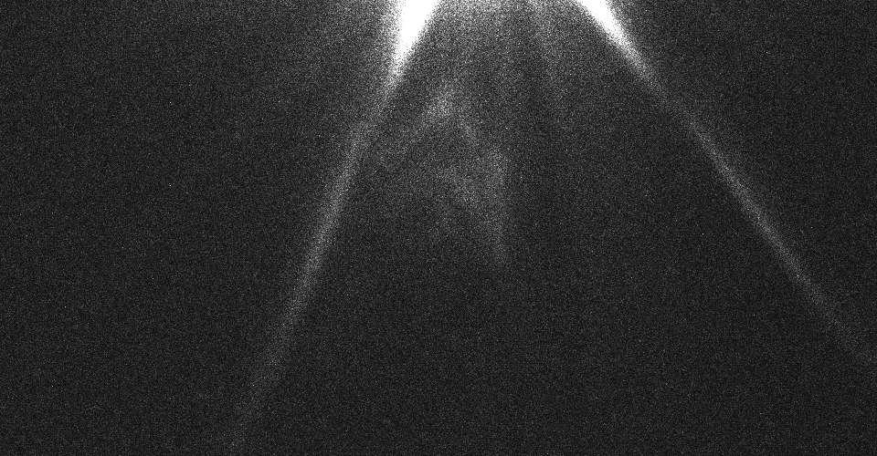 NET HST DSS Mgławica planetarna Hb 12 - Hubble 12 | Konstelacja Kasjopei Newton 320/1500 + Barlow Tele Vue 3x (2,4x) + ZWO ASI 290MM-C + Baader Ha 7nm | 1 x 7s | 150% . NET HST DSS HML Mgławica planetarna NGC 6543 - Mgławica Kocie Oko | Konstelacja Smoka Newton 320/1500 + Barlow Tele Vue 3x (2,4x) + ZWO ASI 290MM-C + Baader Ha 35nm | 1 x 10s | 150% . 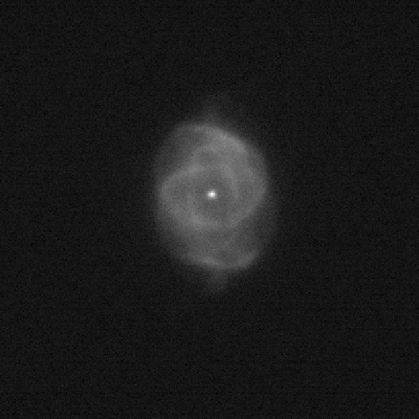 Newton 320/1500 + Barlow Tele Vue 3x (2,4x) + ZWO ASI 290MM-C + Baader OIII 8nm | 1 x 10s | 150% . 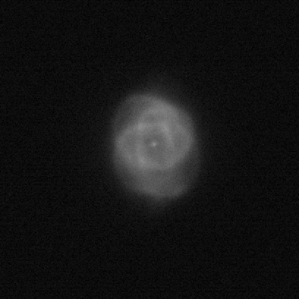 Newton 320/1500 + Barlow Tele Vue 3x (2,4x) + ZWO ASI 290MM-C + Baader SII 8nm | 1 x 40s | 150% . 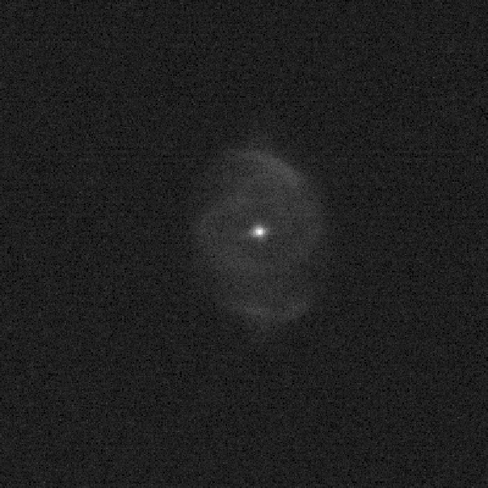 Newton 320/1500 + Barlow Tele Vue 3x (2,4x) + ZWO ASI 290MM-C + Baader UHC-S | 1 x 10s | 150% . 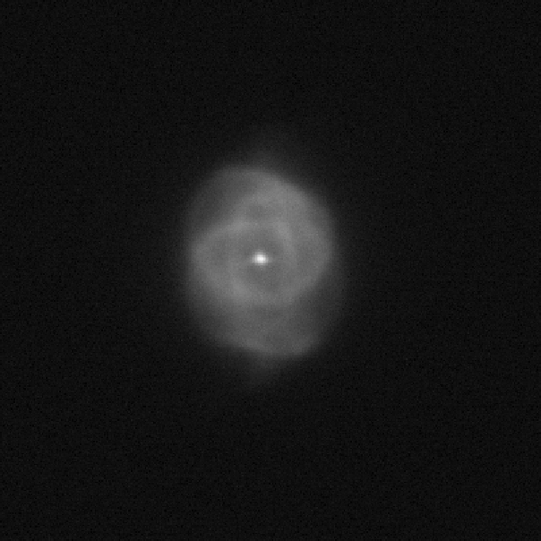 NET HST DSS HML Mgławica planetarna NGC 6210 - Mgławica Żółw | Konstelacja Herkulesa Newton 320/1500 + Barlow Tele Vue 3x (2,4x) + ZWO ASI 290MM-C + Baader 495nm | 1 x 7s | 150% . 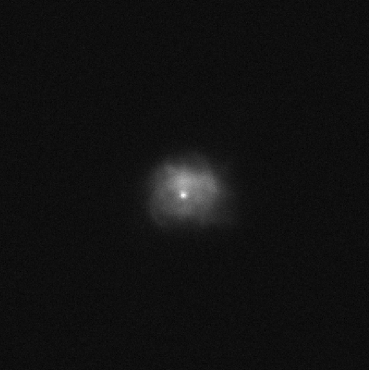 NET HST DSS HML Mgławica planetarna Minkowski 1-92 | Min 1-92 | PN M 1-92 - Mgławica Ślad stopy | Konstelacja Łabędzia Wszyscy znamy Footprint planetary nebula Minkowski 1-92 ze zdjęć HST, po pierwszych obserwacjach teleskopem 30cm stwierdzimy, że widzimy jedynie jasną plamkę, i nie wiemy, czy ona jest aż tak mała, czy to jakaś pomyłka, a może dla amatorów jej kształt jest poza zasięgiem. I tu wchodzą Cyfrowe Astroobserwacje. Podłączamy sprzęt, celujemy w obiekt, rozsiadamy się wygodnie i możemy podziwiać, o ile seeing pozwoli :] Newton 320/1500 + Barlow 5x + ZWO ASI 290MM-C | 1 x 1s | 100% .  NET HST DSS HML Gwiazda Wodorowa Campbella - HD 184738 | Campbell's Hydrogen Star (V1966 Cyg) | Konstelacja Łabędzia Wizualnie teleskopem klasy 30cm na tym obiekcie ciężko doszukać się jakichś szczegółów, ale po podpięciu kamerki z Barlowem i filtrem Ha, który osłabi nam blask gwiazdy centralnej, na ekranie staje się widoczna przytłumiona filtrem HD 184738, oraz wodorowa otoczka, która ją otacza. Ot i nasza Campbell's Hydrogen Star. Newton 320/1500 + Barlow 3x + ZWO ASI 290MM-C + Baader Ha 7nm | 1 x 200ms | 200% . 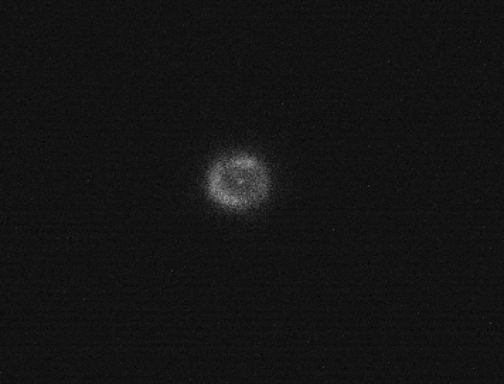 NET HST DSS HML Mgławica planetarna NGC 7027 | Konstelacja Łabędzia Gdy w takiej skali obrazowania w mgławicy NGC 7027 na klatkach 500ms dostrzegasz gwiazdę centralną, to wiesz, że jest naprawdę dobry seeing :) Newton 320/1500 + Barlow 3x + ZWO ASI 290MM-C | 1 x 500ms | 200% . 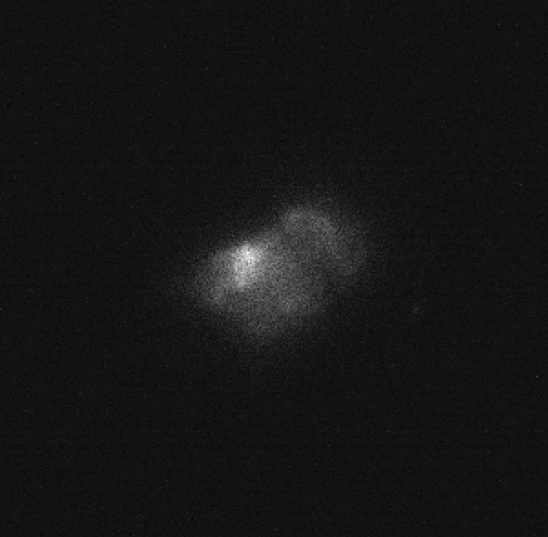 NET HST DSS HML Mgławica planetarna NGC 7354 | Konstelacja Cefeusza Newton 320/1500 + Barlow 3x + ZWO ASI 290MM-C + Baader UHC-S | 1 x 12s | 100% . 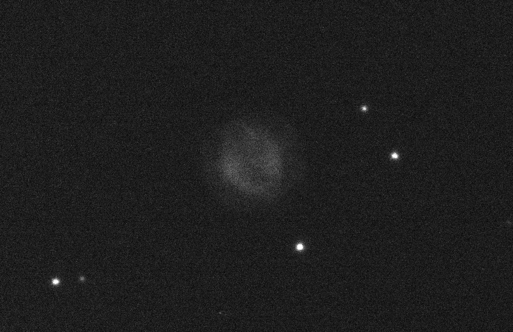 NET HST DSS Mgławica NGC 7635 - Mgławica Bańka | Konstelacja Kasjopei Newton 320/1500 + Barlow 3x + ZWO ASI 290MM-C + Baader Ha 7nm | 1 x 20s | 100% . 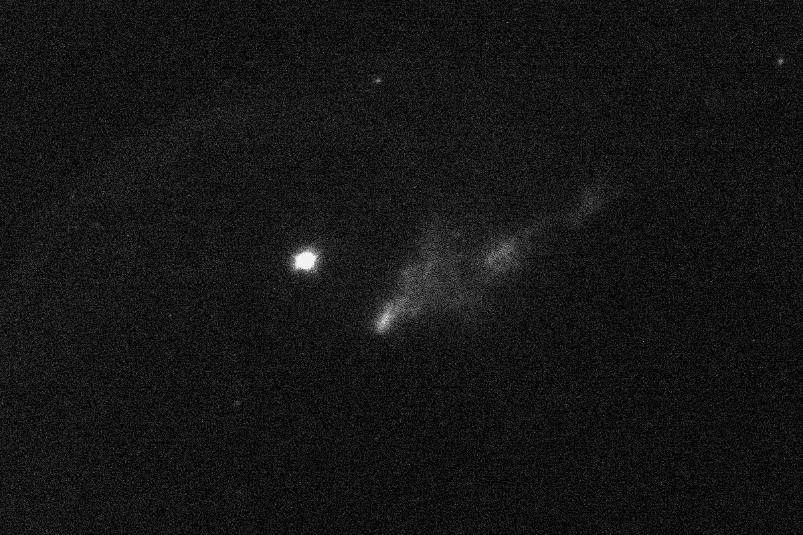 NET HST DSS HML Mgławica planetarna NGC 7008 - Mgławica Embrion | Konstelacja Łabędzia Newton 320/1500 + Barlow Hyperion (1,9x) + ZWO ASI 290MM-C + Baader Ha 7nm | 1 x 40s | 100% . 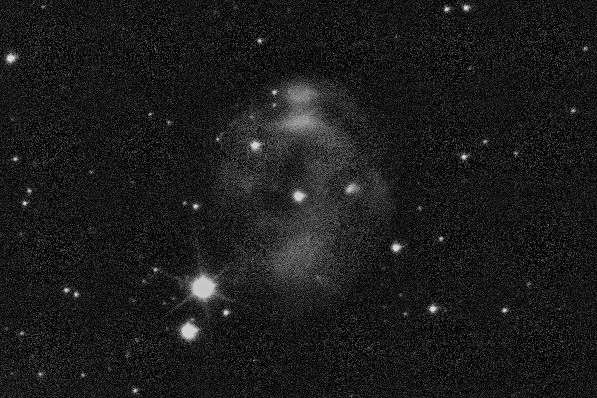 NET HST DSS HML Mgławica planetarna NGC 6826 - Mgławica Mrugająca | Konstelacja Łabędzia Newton 320/1500 + Barlow Tele Vue 3x (2,4x) + ZWO ASI 290MM-C + Baader UHC-S | 1 x 40s | 150% . 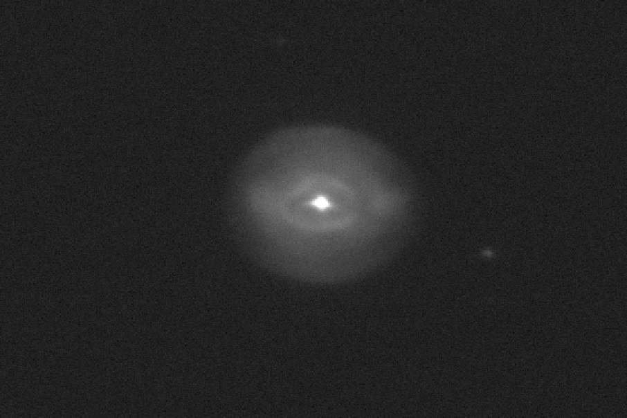 NET HST DSS HML Mgławica planetarna Messier 27 - Mgławica Hantle | Konstelacja Lisa Newton 320/1500 + ZWO ASI 290MM-C + Baader Ha 7nm | 1 x 40s | 100% . Newton 320/1500 + ZWO ASI 290MM-C + Baader OIII 8nm | 1 x 40s | 100% . NET HST DSS HML Mgławica planetarna Messier 76 - Mgławica Małe Hantle | Konstelacja Perseusza Newton 320/1500 + Barlow Hyperion + ZWO ASI 290MM-C + Baader Ha 7nm | 1 x 60s | 100% . 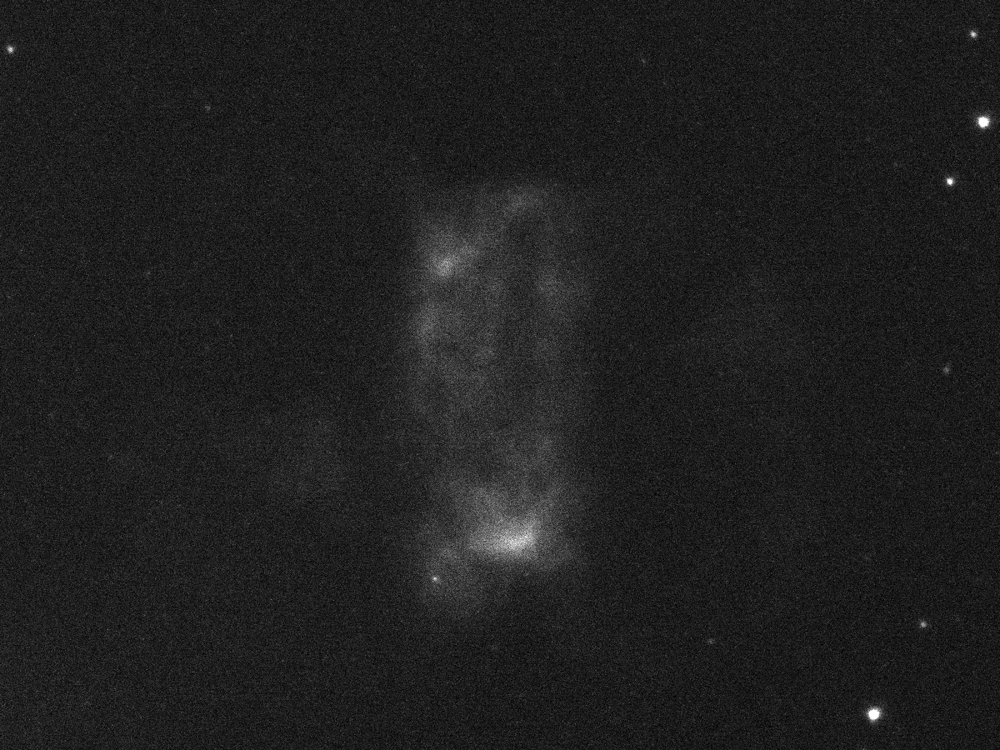 NET HST DSS HML Mgławica planetarna Messier 57 - Mgławica Pierścień | Konstelacja Lutni Newton 320/1500 + Barlow Tele Vue 3x (2,4x) + ZWO ASI 290MM-C + Baader Ha 35nm | 1 x 20s | 100% . NET HST DSS HML NGC 4490 | Konstelacja Psów Gończych Newton 305/1500 + ZWO ASI 290MM-C | 1 x 20s | 100% . NET HST DSS HML NGC 891 | Konstelacja Andromedy Newton 320/1500 + ZWO ASI 290MM-C | 1 x 12s | 100% | full image size | . NET HST DSS HML M 106 | Konstelacja Psów Gończych Newton 320/1500 + ZWO ASI 290MM-C | 1 x 60s | 100% | full image size | . 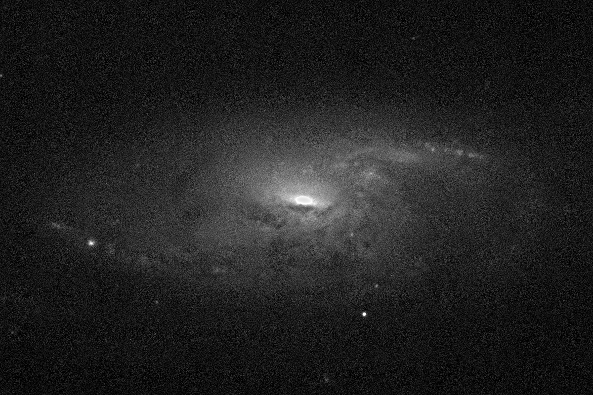 NET HST DSS HML NGC 5907 | Konstelacja Smoka Newton 305/1500 + ZWO ASI 290MM-C | 1 x 7s | 100% | full image size | . NET HST DSS HML NGC 281 | Konstelacja Kasjopei Newton 320/1500 + ZWO ASI 290MM-C + Ha 12nm | 1 x 120s | 100% | full image size | . 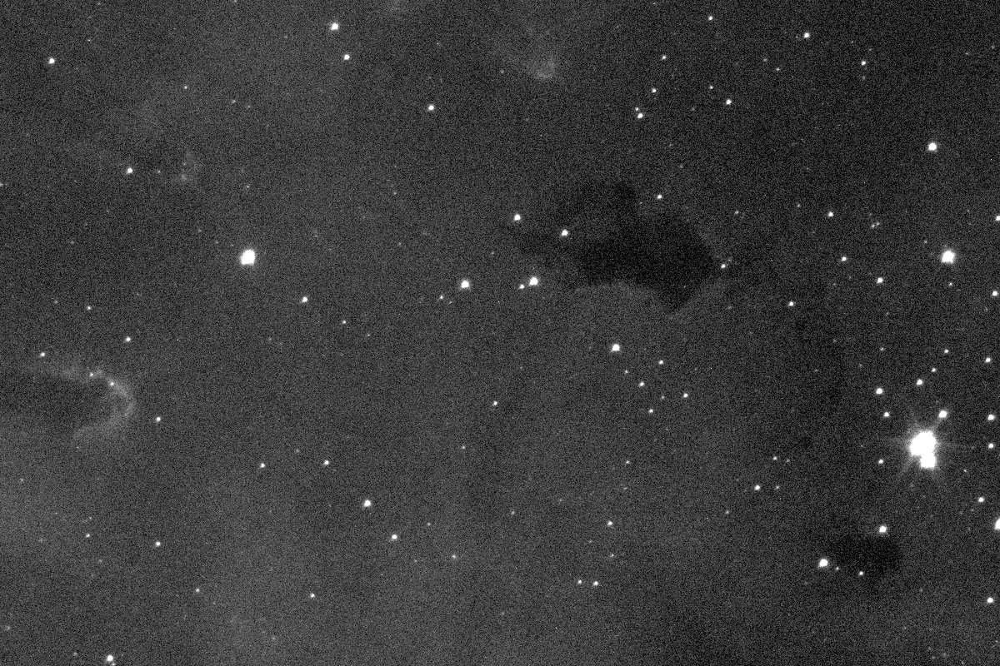 NET HST DSS HML 
|